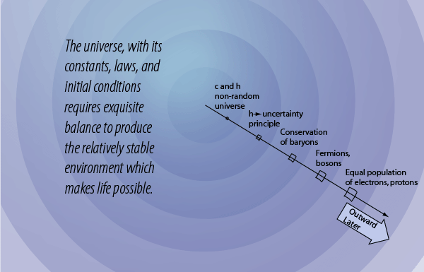

The role of the uncertainty principle
In its most basic form, the uncertainty principle states that you cannot simultaneously determine the position and momentum of a particle with arbitrarily high precision. Another form of it states that you cannot simultaneously determine the energy and time for a particle. So what?
The uncertainty principle has its origin in the fact that at a fundamental level a particle is more precisely described by a quantum mechanical wavefunction, and the nature of the connection of position and momentum to this wavefunction precludes the simultaneous precise measurement of position and momentum. This can be shown graphically from the connection of the wavelength of a particle wavefunction and the probability of finding the particle at a given position. OK, this still doesn't probe the deep significance of the uncertainty principle for the structure of the unverse.
The level at which the significance of the uncertainty principle begins to become apparent is in the consideration of the confinement energy necessary to hold a particle within a given volume, say inside an atom or inside a nucleus. If the uncertainty of position is made very small by containing a particle like an electron in the small volume of an atom, then the uncertainty in momentum is made large. If large momenta are possible, this implies a high energy, so at a very fundamental level in nature we come to the fact that confining a particle within a small volume requires a high energy. Looked at from another perspective, if you have a certain amount of confinement energy from the electromagnetic forces in an atom, that determines the size of the atom - the volume within which that amount of energy can contain electrons. If you try to confine an electron in a nucleus, you find that you can't do it, because not enough energy is available. You can however contain protons an neutrons within the smaller volume of the nucleus with the energy available from the nuclear strong interaction.
The point of this discussion is to make the point that the energy available determines the size because of the uncertainty principle. The energy available from the nuclear strong force and the electromagnetic force determined the sizes of nuclei and atoms before there were any nuclei and atoms. That is, it appears that the uncertainty principle which depends directly upon Planck's constant was an original characteristic of the big bang before the universe had cooled to the point where nuclei and atoms were stable.
Another view of the constraints that determined the bounds of atoms and nuclei very early in the big bang involves the examination of the coupling constants that characterize the four fundamental forces. Those coupling constants express the relative strengths of these forces, and therefore the energy that can be contributed from each, and therefore the size of confinement that each could manage for the protons, neutrons, and electrons that would arise in the big bang. So it could be said that the size of the coupling constants determined the size and structure of the systems that could arise in the universe.
| The conservation of baryon number |
HyperPhysics  | R Nave |